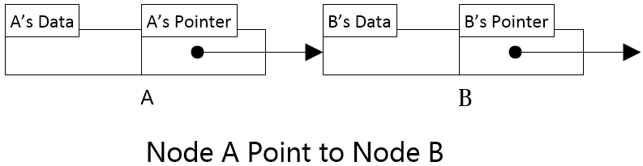
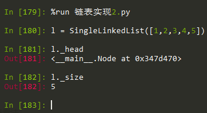

结合嵌套类进行链表的实现
引子
今天是国庆节，也是我加强算法和数据结构的第一天，目的是尝试将 C 与 CPP 实现的 数据结构 或 算法 利用 Python 实现下，尤其是加强下自己的算法设计能力，每每言此即想到 CloudIn 的面试，时间很紧，自己水平一般，找到问题，赶紧弥补。 进入正题，本来是要参考并实现 单链表 结构，结果看到了 Nested Class 本来不知道怎么查相关资料 或者说这个关键字不知道，就说 "类中类"，百度没有，就 SOV5 {Class in Class} 专业术语叫 嵌套类，惭愧！之前接触 Django 是就出现了 嵌套类，即 metaclass 的实现。
class Book(object):
"""docstring for Book"""
def __init__(self, arg):
super(Book, self).__init__()
self.arg = arg
class MzBook(object):
"""docstring for MzBook"""
def __init__(self, arg):
super(MzBook, self).__init__()
self.arg = arg
__metaclass__ = Book
def blabla():
pass
以上 *__metaclass__* 并未嵌套，但是却影响我的之后 对 Python 类的神奇看法
单链表
接下来分析 单链表 的构成。若下图 节点 A 与 节点 B 实现了一个简单的 链表

链表是由一个一个节点连成的表，一个节点分为 data & pointer 分别存储 该节点 的 数据内容 与 下一个 节点 的 地址，如下图所示，python 实现的 SingleLinkedList 对应 链表的数据结构

以上 L 是一个 链表 实例 他有 5 个节点
嵌套类
# -*- coding: utf-8 -*-
# 结合 嵌套类 进行 链表的实现
class SingleLinkedList(object):
"""docstring for SingleLinkedList"""
class Node(object):
"""docstring for Node"""
__slots__ = ['_data', '_next']
def __init__(self, _data):
self._data = _data
self._next = None
def getData(self):
return self._data
def getNext(self):
return self._next
def setData(self, _data):
self._data= _data
def setNext(self, _next):
self._next = _next
def __init__(self, initLinkedList=None):
super(SingleLinkedList, self).__init__()
# 首 初始化 为 空
self._head = None
if initLinkedList == None or len(initLinkedList) == 0:
self._size = 0
else:
self._head = self.Node(initLinkedList[0])
transition = self._head
for _index in range(len(initLinkedList[1:])):
node = self.Node(initLinkedList[_index]) # self.Node(_data)
if _index != len(initLinkedList):
transition._next = node
transition = transition._next
else:
transition._next = None
self._size = len(initLinkedList)
def isEmpty(self):
"""判断 链表 是否为空"""
return self._head == None
def size(self):
"""判断 链表 长度"""
currentNode = self._head
count = 0
while currentNode != None:
count += 1
currentNode = currentNode.getNext()
# self._size = count
# return self._size
print(count)
def travel(self):
"""遍历"""
currentNode = self._head
while currentNode != None:
print currentNode.getData()
currentNode = currentNode.getNext()
def appendleft(self, _data):
"""前端 添加 元素"""
node = self.Node(_data)
node.setNext(self._head)
self._head = node
def append(self, _data):
"""后端 添加 元素"""
node = self.Node(_data)
if self.isEmpty():
# 若 空表 直接置为 head
self._head = node
else:
# 不是 则 找到最后一个
currentNode = self._head
while currentNode.getNext() != None:
currentNode = currentNode.getNext()
currentNode.setNext(node)
def insert(self, _data, _position):
"""任意位置 添加 元素"""
if _position <= 1:
self.appendleft(_data)
elif _position > self.size():
self.append(_data)
else:
node = self.Node(_data)
currentNode = self._head
count = 1
pre = None
while count < _position:
count += 1
pre = currentNode
currentNode = currentNode.getNext()
pre.setNext(node)
node.setNext(currentNode)
def delete(self, _data):
"""任意位置 删除 元素"""
currentNode = self._head
count = 0
while currentNode.getNext().getData() == _data:
currentNode = currentNode.getNext()
count += 1
if count >= self.size():
raise ValueError('该链表没有这个元素')
Deleted = currentNode.getNext()
DeletedNext = Deleted.getNext()
currentNode.setNext(DeletedNext)
def search(self, _data):
"""搜索 元素 是否 在 链表中"""
pass
def index(self, _data):
"""检索 元素 所处 在 链表中 位置"""
pass
以上 SingleLinkedList 类中 定义 Node 类 [嵌套类]，当 SingleLinkedList 调用 Node 类时 直接 在 类中声明 self.Node(_data) ，即调用了并构成了一个节点
不同于 我的 调用方式
参考 http://www.cnblogs.com/aguncn/p/4200113.html
他是通过 语法糖 @classmethod 来实现 类方法 对 内部类的调用。
Comments !